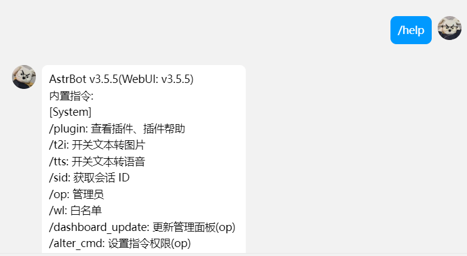
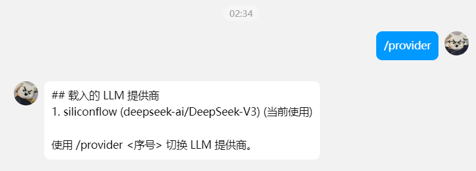

手把手教你使用astrbot搭建使用deepseek模型的QQ机器人
旧博客地址：《使用astrbot搭建使用deepseek模型的QQ机器人》 #### astrbot官网 # 什么是 AstrBot？ - AstrBot 是一个易于上手的多平台聊天机器人及开发框架。通过它，你能够在多种消息平台上部署一个支持大语言模型（LLM）的聊天机器人。并以此实现但不限于 AI 知识库问答、角色扮演、群聊管理、LLM Agent 等功能。它有如下特性
松耦合：AstrBot 历经 3 次大代码重构。每一次都在向着松耦合、模块化的方向迈进。目前，AstrBot 采用了事件总线和消息事件流水线的架构设计，实现近乎完全的模块化。
异步：AstrBot 采用了异步编程模型，使得 AstrBot 在处理多个消息平台的消息时，能够更加高效。
多消息平台部署：AstrBot 默认支持接入 QQ、QQ频道、微信。通过插件，还可以接入 Telegram 等任何消息平台。
完善的插件系统：AstrBot 提供了完善、及其易于上手的插件系统，你可以通过插件实现自己的功能。开发一个插件，只需要几行代码。
它是如何实现的？
下面的拓扑图简述了 AstrBot 与插件、消息平台适配器、语言模型提供商、消息协议实现端的关系。

开始部署（Linux用docker部署）
我的方法是使用是使用docker进行部署，如果还没安装docker，请使用安装1panel面板进行傻瓜式自动安装。
1 | mkdir astrbot |
通过以下命令查看 AstrBot 的日志： 1
sudo docker logs -f astrbot
🎉 大功告成！
如果一切顺利，你会看到 AstrBot 打印出的日志。
如果没有报错，你会看到一条日志显示类似 🌈 管理面板已启动，可访问 并附带了几条链接。打开其中一个链接即可访问 AstrBot 管理面板。如下图 
 >注意：如何使用云服务器部署的记得打开防火墙，端口
>注意：如何使用云服务器部署的记得打开防火墙，端口6185
 登录进去后
登录进去后  # 通过 NapCatQQ 协议实现端接入 QQ >[!tip] >
# 通过 NapCatQQ 协议实现端接入 QQ >[!tip] >如果过于频繁使用（同一时间发送消息次数过多），可能会导致更高的风控风险，请注意使用频率。
NapCatQQ 是基于无头 QQNT 的 OneBot 协议实现端。它本质上运行了一个 QQNT 实例。
WARNING
为了成功部署，你需要：
- 一个 QQ 号（最好不是新创建的 QQ 号）。
- 一台具有摄像功能的手机以扫码登录 QQ。
通过 Docker 部署 NapCat
1 | docker run -d \ |
如果出现以下错误请更新docker源仓库 
1
vim /etc/docker/daemon.json
1
2
3
4
5
6
7
8
9
10
11
12
13
14
15
16
17{
"registry-mirrors":["https://docker.hpcloud.cloud",
"https://docker.m.daocloud.io",
"https://docker.unsee.tech",
"https://docker.1panel.live",
"http://mirrors.ustc.edu.cn",
"https://docker.chenby.cn",
"http://mirror.azure.cn",
"https://dockerpull.org",
"https://dockerhub.icu",
"https://hub.rat.dev",
"https://proxy.1panel.live",
"https://docker.1panel.top",
"https://docker.m.daocloud.io",
"https://docker.1ms.run",
"https://docker.ketches.cn"]
}1
2systemctl daemon-reload
systemctl restart docker
1 | docker logs napcat |
请复制管理面板的 URL，然后在浏览器中打开备用。
然后使用你要登录的 QQ 扫描出现的二维码，即可登录。
如果登录阶段没有出现问题，即成功部署。
 # 连接到 AstrBot ## 配置 aiocqhttp 在 AstrBot 的管理面板中，选择左边栏的 消息平台 选项卡。点击+号新增适配器，选择 aiocqhttp，会出现 aiocqhttp 的相关配置项，如下图所示：
# 连接到 AstrBot ## 配置 aiocqhttp 在 AstrBot 的管理面板中，选择左边栏的 消息平台 选项卡。点击+号新增适配器，选择 aiocqhttp，会出现 aiocqhttp 的相关配置项，如下图所示： 
 ## 配置项填写： ID(id)：随意填写，用于区分不同的消息平台实例。系统会自动填充。 启用(enable): 勾选。 反向 WebSocket 主机地址：请填写你的机器的 IP 地址。如 0.0.0.0 反向 WebSocket 端口：填写一个端口11451。
## 配置项填写： ID(id)：随意填写，用于区分不同的消息平台实例。系统会自动填充。 启用(enable): 勾选。 反向 WebSocket 主机地址：请填写你的机器的 IP 地址。如 0.0.0.0 反向 WebSocket 端口：填写一个端口11451。这个端口是通过上面docker部署的时候就定下来了，跟到这一步别改成其他的
保存配置
切记点击右下角 保存，AstrBot 重启并会应用配置。
在 NapCatQQ 中添加 WebSocket 客户端
切换回 NapCatQQ 的管理面板，点击 网络配置->添加网络配置，在弹出的窗口中，名称随意填写，类型选择 WebSocket 客户端。点击确认。 
在新弹出的窗口中：
- 勾选 启用。
- URL 填写 ws://<宿主机IP>:<在 AstrBot中填写的端口>/ws。如 ws://172.17.0.3:11451/ws。 因为这里是通过docker部署的，要查看容器ip，不是你实际的物理机的ip地址,用以下命令查看astrBot分到的虚拟IP地址 如果不出意外的话，他就会返回docker分配给astrBot的虚拟IP地址了，在napcat里填ws://获取到的IP:11451/ws 就可以了
1
docker inspect -f '{{range.NetworkSettings.Networks}}{{.IPAddress}}{{end}}' astrbot
- 消息格式：Array 切记后面加一个 /ws 切记后面加一个 /ws! 切记后面加一个 /ws
点击 保存。
🎉 大功告成！ 此时，你的 AstrBot 和 NapCatQQ 应该已经连接成功。使用 私聊 的方式在 QQ 对机器人发送 /help 以检查是否连接成功。  # 获取api 我用的是硅基流动，官网链接https://cloud.siliconflow.cn/i/iICxcKiF，如果觉是我上面我步骤实现没有问题高台您的贵手使用我的邀请码注册：iICxcKiF，它可以使新用户获得免费14元的赠送余额，自用不太频繁大概可以用一百多天，我问过LMM机器人了 :smiley::smile::laughing: 下面是我玩了一天，大概用了0.018元
# 获取api 我用的是硅基流动，官网链接https://cloud.siliconflow.cn/i/iICxcKiF，如果觉是我上面我步骤实现没有问题高台您的贵手使用我的邀请码注册：iICxcKiF，它可以使新用户获得免费14元的赠送余额，自用不太频繁大概可以用一百多天，我问过LMM机器人了 :smiley::smile::laughing: 下面是我玩了一天，大概用了0.018元 
 复制API秘钥回到下面的Astrbot界面选择服务提供商->点击+号新增服务提供商->选择硅基流动，填到api key处，最后右下角点击保存。
复制API秘钥回到下面的Astrbot界面选择服务提供商->点击+号新增服务提供商->选择硅基流动，填到api key处，最后右下角点击保存。 
 ## 🎉大功告成
## 🎉大功告成
向你的QQ机器人发送消息,   进行到这一步，恭喜你出师了，可以和你的机器人聊天了，如果你的QQ缺少一个积极回复你的好友，那么这款机器人，你值得拥有！！！😏😏😏